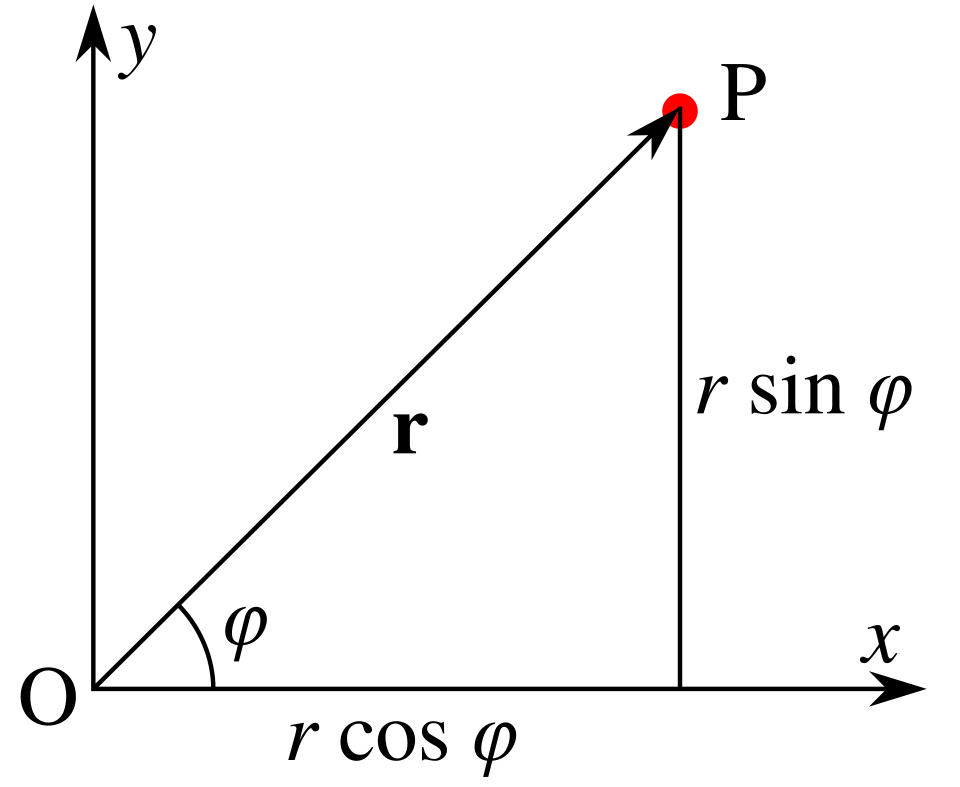
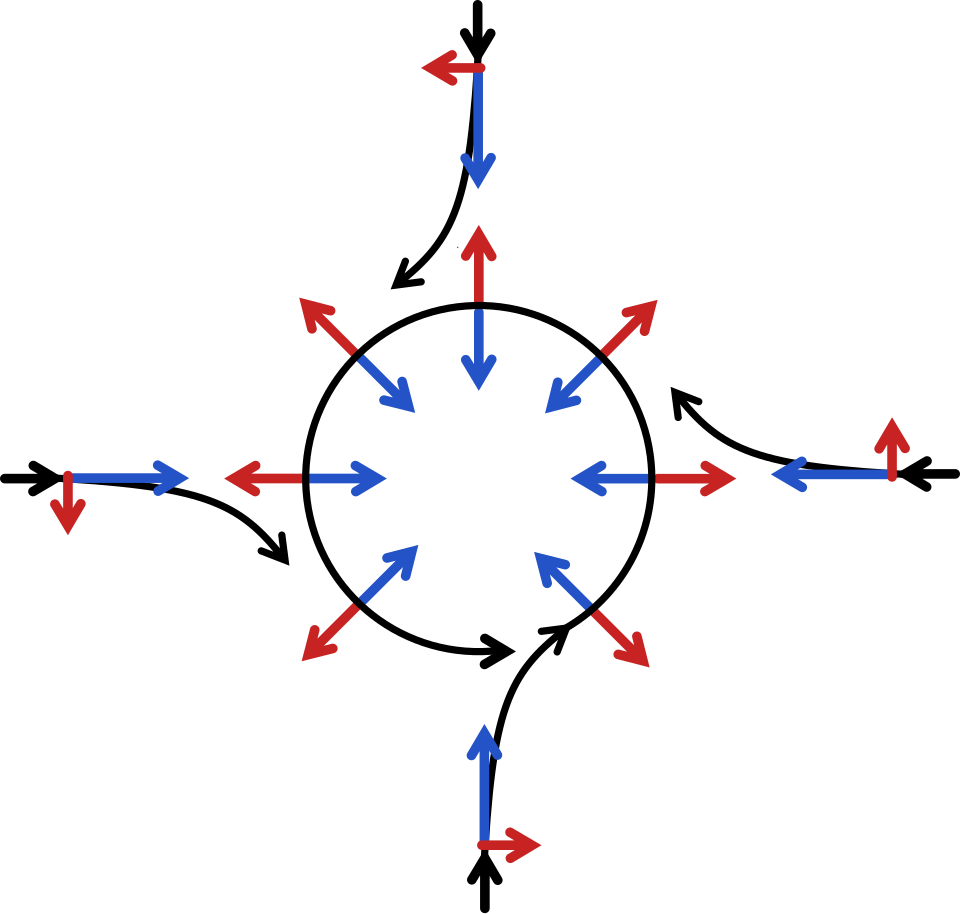
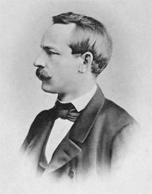

미분했더니 좌표가 섞여 들어온다
출발 문제
평면 위에서 벡터장을 미분하는 것은 아주 자연스럽다. 벡터장
이제 같은 평면을 극좌표

기저벡터
이 벡터장을
계산을 직접 해보면 더 선명해진다. 극좌표에서
이 함정은 극좌표뿐 아니라, 구면좌표, 원통좌표, 그리고 일반적인 곡선좌표 어디서든 나타난다. 곡면 위에서는 더 심각하다: 구면에서는 직교좌표 자체가 존재하지 않으므로, 편미분은 항상 좌표 잡음을 포함한다. 심지어 일반상대성이론에서 중력을 기술할 때, 크리스토펠 기호는 "좌표계의 가속"과 "진짜 중력"이 뒤섞인 형태로 나타난다. 아인슈타인의 등가 원리 — 중력과 가속이 국소적으로 구분 불가능하다는 것 — 의 수학적 표현이 바로 여기에 있다.
그렇다면 질문은 명확하다 — 어떻게 하면 좌표의 잡음을 걸러내고, 벡터장의 순수한 변화만 볼 수 있는가?
패턴
해결의 열쇠는 의외로 단순한 아이디어에 있다: 편미분이 잡아낸 변화에서 좌표 격자의 변화를 빼면 된다.
비유를 하나 들어 보자. 기차 안에서 테이블 위의 커피잔을 관찰하고 있다고 하자. 기차가 커브를 돌 때 커피잔이 미끄러진다. 이것은 커피잔의 "진짜 움직임"인가? 기차 밖에서 보면 커피잔은 관성에 의해 직선 운동을 하고 있을 뿐이고, 움직인 것은 기차(좌표계)이다. 기차의 가속을 보정해야 커피잔의 진짜 운동을 볼 수 있다. 물리학에서 "관성력"이라 부르는 것이 바로 이 좌표 잡음이고, 크리스토펠 기호가 하는 역할이 정확히 이것이다.

구체적으로 써보자. 벡터장
이 되는데, 여기에는 기저벡터
가 된다. 핵심 통찰을 정리하면:
- 편미분은 두 가지를 동시에 잡는다 — 벡터장의 진짜 변화와 좌표 격자의 변화. 이 둘이 뒤섞여 있기 때문에 편미분 결과는 좌표를 바꾸면 달라진다.
- 크리스토펠 기호
는 좌표 격자가 얼마나 휘어져 있는지를 수치화한 것이다. 직교좌표에서는 격자가 전혀 휘지 않으므로 이다. 극좌표에서는 격자가 돌아가므로 이다. 를 보정 항으로 더하면, 좌표 잡음이 상쇄되어 좌표에 무관한 결과를 얻는다. 이 보정된 미분이 공변미분 이다.
그런데 한 가지 걱정이 생긴다. 보정 항
하지만 3장에서 계량
비유하자면, 계량은 "자(ruler)"이고 접속은 "자를 들고 걸어다니는 방법"이다. 자를 들고 곡면 위를 걸을 때, 자의 길이가 변하지 않고(계량 호환), 걸음걸이에 "비틀림"이 없는(torsion-free) 걸어다니기 방법은 유일하다.
정리
매니폴드 위에서 벡터장(더 일반적으로 텐서장)을 좌표에 무관하게 미분하려면, 편미분에 더해지는 보정 규칙이 필요하다. 이 보정 규칙을 접속(connection)이라 하며, 형식적으로는
리만 매니폴드
- 계량 호환:
, 즉 평행이동하면 벡터의 길이와 각도가 보존된다. - 비틀림 없음:
, 즉 좌표 격자의 "뒤틀림"이 없다.
이 유일한 접속을 레비-치비타 접속이라 하며, 그 크리스토펠 기호는 계량으로부터 명시적으로 계산된다:
이 공식은 "계량만 알면 접속을 계산할 수 있다"는 것을 뜻한다. 자(ruler)를 정하면 미분 규칙이 자동으로 따라온다 — 리만 기하학의 핵심적인 경제성이다.
접속이 정해지면, 벡터의 평행이동(parallel transport)이 가능해진다. 곡선
정의
- 접속 (방향 비교기 / Direction Comparator,
) — 서로 다른 점의 접선벡터를 비교하는 규칙. 곡면 위에서는 두 점의 접선공간이 다른 "방"이므로, 벡터를 한 방에서 다른 방으로 옮기는 규칙이 있어야 비교가 가능하다. - 공변미분 (보정된 미분 / Corrected Derivative,
) — 벡터장 를 방향 로 미분하되 좌표 잡음을 보정한 것. “기차의 가속을 빼고 커피잔의 진짜 움직임만 본다.” - 크리스토펠 기호 (좌표 보정값 / Coordinate Correction Term,
) — 공변미분에서 편미분에 더해지는 보정 항. 좌표 격자가 얼마나 휘어져 있는지의 척도이며, 텐서가 아니다(좌표를 바꾸면 변환 규칙이 다르다). 바로 그 비-텐서적 성질 덕분에 편미분의 잡음을 상쇄할 수 있다. - 레비-치비타 접속 (계량이 정하는 유일한 비교기 / Metric-Compatible Torsion-Free Comparator) — 계량을 보존하고 비틀림이 없는 유일한 접속. 리만 기하학의 "기본 접속"이며, 측지선·곡률 등 거의 모든 후속 개념이 여기서 출발한다.
핵심 인물과 일화
엘빈 브루노 크리스토펠 (Elwin Bruno Christoffel, 1829–1900)

리만이 곡면 위의 기하학이라는 거대한 비전을 제시했을 때, 그것을 실제로 계산 가능한 도구로 만든 사람은 크리스토펠이었다.
크리스토펠은 1869년 논문에서 핵심적인 질문을 던진다: 곡면 위에서 텐서를 미분할 때, 좌표의 변화가 끼어드는 "잡음"을 체계적으로 보정하려면 어떤 양이 필요한가? 그 답으로 그는 계량 텐서의 편미분으로부터 계산되는 보정 계수를 도출했다 — 오늘날 "크리스토펠 기호
크리스토펠 기호 자체는 텐서가 아니다 — 좌표를 바꾸면 변환 규칙이 텐서와 다르다. 하지만 바로 이 “비-텐서적” 성질 덕분에, 편미분에 크리스토펠 기호를 더하면 좌표 변환에 깔끔하게 따라가는 공변미분이 된다. 잡음을 잡는 보정 항이 정확히 잡음과 같은 유형이기 때문에, 둘이 상쇄되어 좌표 독립적인 결과를 낳는 것이다.
툴리오 레비-치비타 (Tullio Levi-Civita, 1873–1941)

크리스토펠이 대수적 보정 항을 발견했다면, 레비-치비타는 거기에 기하학적 의미를 부여했다. 1917년, 레비-치비타는 크리스토펠 기호가 사실은 평행이동 — 벡터를 곡면 위에서 “회전시키지 않고” 옮기는 것 — 의 수학적 표현이라는 것을 간파한다.
이탈리아 파도바 대학의 교수였던 레비-치비타는 스승 그레고리오 리치-쿠르바스트로와 함께 "텐서 해석학(calcolo tensoriale)"을 체계화한 인물이기도 하다. 아인슈타인은 일반상대성이론을 구축하면서 리치와 레비-치비타의 텐서 형식론에 크게 의존했고, 레비-치비타와 활발히 서신을 교환했다.
레비-치비타의 접속 개념은 후대에 "계량을 보존하면서 비틀림이 없는 유일한 접속"으로 정밀하게 특성화되었다. 오늘날 레비-치비타 접속이라 불리는 이 접속은, 리만 기하학에서 가장 자연스러운 미분 규칙의 위치를 차지한다.
파시스트 정권의 인종법으로 1938년 교수직에서 쫓겨난 레비-치비타는 고립 속에서 1941년 세상을 떠났다. 그러나 그가 놓은 다리 — 대수적 보정 항과 기하학적 평행이동 사이의 연결 — 는 미분기하학 전체의 기둥으로 남아 있다.
시각화 아이디어
- 극좌표의 함정:
위의 벡터장을 극좌표로 바꾸면 편미분이 0이 아니다 - 보정 항 슬라이더: 편미분 결과 +
보정 항을 분리하여 on/off - GPS 보정: GPS 내비게이션이 지구 곡률을 보정하는 과정의 비유
연결되는 세계들
| 분야 | 연결 |
|---|---|
| 게이지 이론 | 양-밀스 접속 = 파이버 다발 위의 접속 |
| 신경망 | 자연 경사법의 핵심: 매개변수 공간의 접속이 학습 역학을 결정 |
| 수치해석 | 매니폴드 위의 ODE 풀이: 보정 없이 적분하면 해가 매니폴드를 이탈 |
| 일반상대론 | 크리스토펠 기호 = 중력장의 좌표 표현 |
| 정보기하학 |